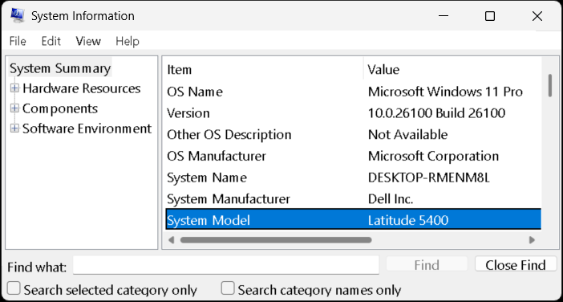
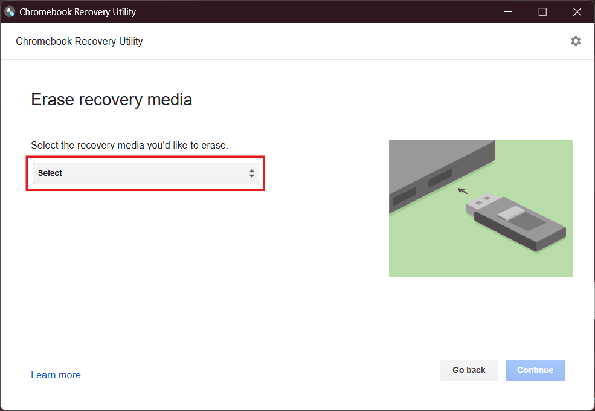
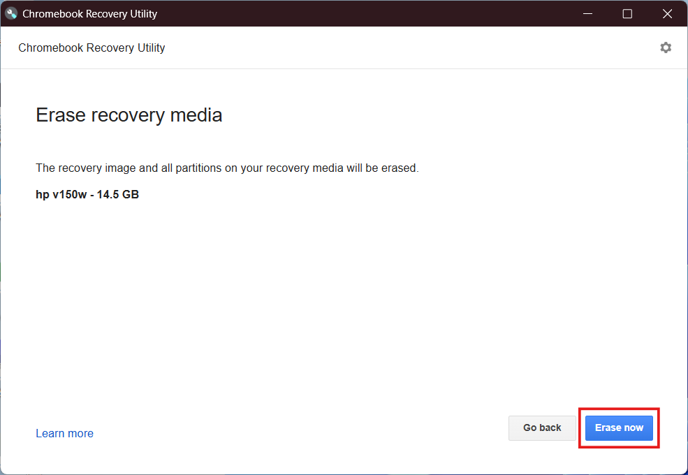
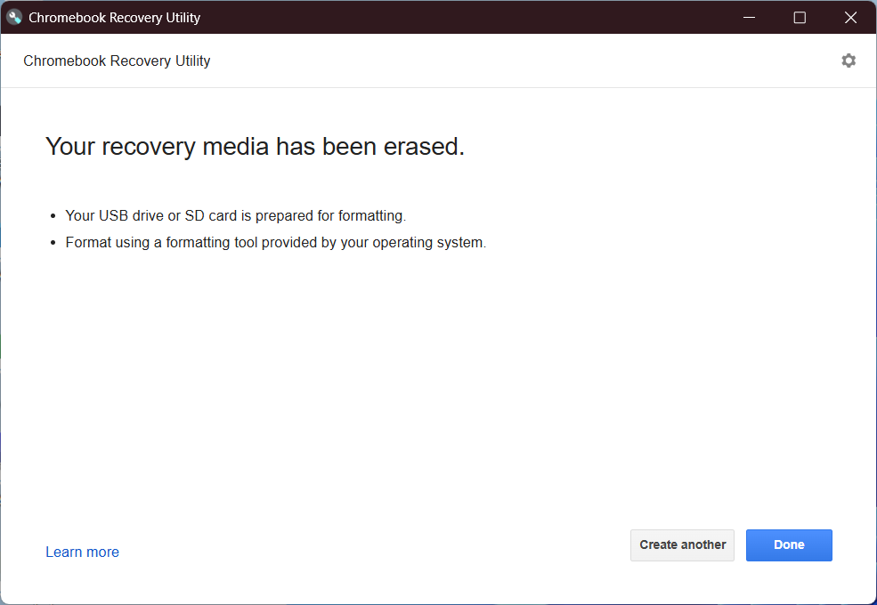

Image attribution: Brunch Framework website
Intended audience
ChromeOS Flex and ChromeOS Brunch are both intended as a replacement operating system for x86_64 PCs, where it would occupy the entire disk.
For this reason, be aware that by installing Flex or Brunch on your PC, your computer's disk will be wiped clean, with whatever operating system and/or data on there being completely lost.
This guide for installing the more native ChromeOS Brunch is far more involved than just installing ChromeOS Flex, so unless you really want the Google Play store functionality in your ChromeOS setup, then consider the regular ChromeOS Flex instead ... refer to my Other Guides for help with that.
This guide will help you build a ChromeOS image using tools brought about by the community-driven project known as the Brunch Framework. Instead of repeating the information already on their GitHub page, I will just link to it here if you're interested in learning about what goes into ChromeOS Brunch.
Purpose
"The Brunch framework aims to create a generic x86_64 ChromeOS image from an official recovery image, enabling ChromeOS on devices not officially supported by Google" ... as a bonus, these builds include the Google Play store app.
How it works
"It achieves this by using a 1 GB ROOTC partition containing a custom kernel, an initramfs, the swtpm binaries, userspace patches, and configuration files, along with a specific EFI partition for booting".
Prerequisites
The same principles regarding compatibility apply to both ChromeOS Flex and ChromeOS Brunch.
Google has published a Certified Models List which outlines the desktop and laptop PCs that are certified to run ChromeOS Flex. The list also shows when the device first started being supported, and for how long it will be officially supported (the End of support date ... usually 10 years after the model was first announced).
Before going further with this guide, please review the Certified Models List to make sure that your computer is listed/supported ... if you can't find your model on the list, double-check that you have the correct model name/number, as follows:
Windows
Newer versions of Windows include the msinfo32 utility:
- Right-click the Start button and select Run ...
- In the Run dialog, type msinfo32 and press Enter
System Information will start in the System Summary section.
Note where it says System Model in the following example:

Linux
To find your computer model, type the following command into your terminal:
sudo dmidecode | grep "Product Name"Sample output for the same machine shown under Windows:
Product Name: Latitude 5400 Product Name: 0PD9KD
If this does not provide any useful output, repeat the command without piping dmidecode to grep.
USB Flash Drive
To create the ChromeOS Brunch bootable installer, you'll need a spare USB stick (preferably USB3) with at least 16 GB capacity. Note that (like the computer disk) this will be completely wiped during the boot disk/installer creation process.
To install ChromeOS Brunch, you'll be creating your own bootable image, derived from an actual ChromeOS recovery image, together with the tools available from the Brunch Framework.
First, you need to identify the ChromeOS recovery image that is suitable for your particular hardware. Refer to the following table:
Processor | Recovery image | Size (GB) |
Intel 8th/9th Gen | rammus / shyvana | 1.6 |
↳ Celeron | octopus / bobba | 1.7 |
Intel 10th Gen | hatch / jinlon | 1.7 |
Intel 11th Gen | volteer / voxel | 1.8 |
AMD Ryzen | zork / gumboz | 1.8 |
Once you've downloaded the recovery image, it's time to download the Brunch archive from their GitHub repository. Click the Download button below to go to the official Brunch Framework page and get their latest stable release (> 900 MB):
Whichever operating system you use to create the USB installer, the downloaded .zip files and the extracted files within (combined) require nearly 20 GB of free disk space
Now for the fun part ... we need to create the actual disk image that will contain the Brunch Framework bootloader, and of course the ChromeOS installer.
Linux: open a Terminal in (or cd into) same folder as your downloaded files from previous section.
The extracted files will occupy (approximately) the following amount of disk space,
plus, we need to create the actual ChromeOS Brunch bootable image file, as shown:
Recovery image | 4.6 |
Brunch installer | 1.1 |
Bootable image | 14.0 |
Total | 19.7 GB |
Update your repo versions:
sudo apt updateInstall these dependencies:
sudo apt install pv cgpt tar unzipExtract the Brunch archive:
tar zxvf brunch_*.tar.gzExtract ChromeOS recovery:
unzip chromeos_*.bin.zipList files to get correct chromeos filename, so you can copy/paste it in next step:
lsExample output
brunch_r134_stable_20250322.tar.gz
chromeos_16151.61.0_rammus_recovery_stable-channel_RammusMPKeys-v7.bin
chromeos_16151.61.0_rammus_recovery_stable-channel_RammusMPKeys-v7.bin.zip
chromeos-install.sh
efi_legacy.img
efi_secure.img
rootc.img
Create the actual installer (replace <recovery_filename> with the correct filename):
sudo bash chromeos-install.sh -src <recovery_filename>.bin -dst chromeos.imgYou can now write your new image, from the previous section, to a USB thumb drive. There are 3 methods to choose from:
Balena Etcher Method
Time estimates:
Writing to USB | 42 minutes |
Verifying USB | 10 minutes |
Total time | 52 minutes |
This method uses the popular Balena Etcher software to write the bootable image to your USB thumb drive ... start by going to the official Balena Etcher website, and clicking the Download Etcher button.
Select the correct version for your O/S and CPU architecture.
Install the app (if applicable) then follow these simple steps:
Open the Balena Etcher app, the on the left, click Flash from File.
Browse to the folder where your installer image is located, and select it.
Next, click the Select target button at center.
Check the box next to your USB thumb drive, then click the Select 1 button.
When you are ready, click the Flash! button at right.
Chrome Method
This method involves using the Chromebook Recovery Utility, a Google Chrome browser extension freely available from the Chrome Web Store. If you don't already have it installed, follow this link and add it to your Chrome browser, or just go to the Chrome Web Store and search for Chromebook Recovery Utility.
Time estimates:
Writing to USB | 25 minutes |
Verifying USB | 14 minutes |
Total time | 39 minutes |
In your Chrome browser, open the Chromebook Recovery Utility and from the gear menu at top-right, select Use local media.
Browse to the folder where your installer image is located, and select it.
After the Chromebook Recovery Utility has parsed the file, you will see a drop-down menu showing removable media drives ... select your USB thumb drive, then click Continue.
If you're on Windows, you will be prompted with a UAC dialog. Just click Yes to continue ...
As indicated above, it takes a while to write/verify the USB thumb drive, so please be patient.
Rufus Method
Time estimates:
Writing to USB | 25 minutes |
Verifying USB | N/A |
Total time | 25 minutes |
This method uses another popular utility called Rufus. Start by going to the official Rufus website and downloading your preferred version, under the Download heading (about half-way down the page).
Once installed (if applicable), start the Rufus app, and at the top, select your USB thumb drive, if it's not already selected.
Next, click the big SELECT button just under that, over to the right ...
Browse to the folder where your installer image is located, and select it.
After the Rufus app has parsed the file, it will make selections in the appropriate boxes to suit the partition scheme and file system types.
When you are ready, click the big START button near the bottom of the window.
How to Boot
The first thing to do in order to boot from a USB thumb drive is to find out how to get your particular computer to boot from USB. Because there are so many makes and models, that level of information is outside the scope of this guide.
Do a Google (or similar) search for <make> <model> how to boot from USB
where <make> & <model> are the actual make and model of your computer.
Examples for various laptop brands include:
Manufacturer | Special key |
Acer | F12 |
Asus | F8 |
Dell | F12 |
HP | F9 |
Lenovo | F12 |
Actual Boot
When you have the info you need to enable Booting from USB, insert the USB thumb drive into the target ChromeOS Brunch computer, and turn on the power. At the manufacturer's logo, press the special key (or key combo) to bring up the boot menu.
Select the bootable USB you created earlier (it's usually listed by its brand name). At the colorful GRUB screen, just allow the auto timer to boot into the default ChromeOS selection.
Please be patient with the first boot, as it can take a long time, depending on your hardware ... to quote from the ChromeOS Brunch website: "the Brunch framework has to rebuild itself by copying the original rootfs, modules and firmware files after each significant change. The time this process takes depends mostly on your USB flash drive / SD card write speed. You may try with one that has better write speed".
Upon testing, it took 68 minutes, during which time the following stages of the boot process were shown onscreen, so at least you know something is happening:
- Loading Brunch Framework
- RootFS is being rebuilt
- Patches are being applied
- (screen will dim once)
Note: testing on a Dell Latitude 5521 had an initial boot time of just 20 minutes.
Once Booted
When you see the Welcome to your Chromebook screen, on your keyboard, press Ctrl+Alt+F2 to open a command shell.
Log in as root then enter the following command:
sudo resize-dataThe operation will take a few seconds to complete, then it will prompt you to restart the computer ... press the Enter key to reboot
From the Welcome to your Chromebook screen, press Ctrl+Alt+F2 and log in as root
Now, you need to identify the disk that you are going to install to. Type the following command:
lsblk -e7Look for a disk named sda or nvme0n1 (or similar) ... you should be able to identify it by its size, printed next to the device name, e.g. sda 8:0 0 238.47G 0 disk
This command is the installer. Type the following:
sudo chromeos-install -dst /dev/sdX... (where sdX is the disk you identified with lsblk)
Now type yes to confirm that all data will be lost.
The installation should only take about 10 minutes ... when it's complete, log out by typing exit
Return to the Welcome to your Chromebook screen by pressing Ctrl+Alt+F1
Shut down your computer from the ChromeOS menu at bottom-right (the shutdown process may take longer than you expect, but please be patient ... do not remove the USB thumb drive until your computer has completely shut down).
Remove the USB thumb drive, then power on your computer ... you should now see that colorful GRUB screen again, but this time, you're booting from your HDD/SSD.
Congrats, you've just installed ChromeOS Brunch ... now, set up ChromeOS as normal
There are 3 types of update to consider, as follows:
- Brunch/ChromeOS together
- Update just ChromeOS
- Update just Brunch
Which one you choose depends on your interpretation of what's best and/or easiest.
How to update Brunch and ChromeOS together
Disk space requirements:
Latest brunch (.tar.gz) | 0.89 GB |
Latest recovery (.zip) | 1.8 GB |
Recovery extracted (.bin) | 4.7 GB |
Total | 7.39 GB |
Manually
There are 3 main steps to manually update both Brunch and ChromeOS together:
- Download the latest Brunch release
- Download latest recovery & extract it
- Run the chromeos-update command
However, please read all the instructions within this Manually section before downloading anything.
- Downloading the latest Brunch release is pretty straight-forward ... just follow the link above, and download the file with the .tar.gz extension, saving it to your Downloads folder
- When downloading the latest recovery, follow the link above, and be sure to download the same recovery that matches your current installation, i.e. for the same codename that you used initially to install Brunch, but the latest version of it ... if you can't remember the codename of the recovery, in ChromeOS, open a new tab in your Chrome browser and type
chrome://systeminto the address bar, then pressenter... scroll down to HWID on the left. Your codename will be shown as the first word in the right column, on the same row (ignore the hex code). Alternatively, open a TTY terminal by pressingCtrl+Alt+F2and log in asrootthen run the commandsudo crossystem hwid - Running the chromeos-update command is a little tricky, because you need to access your file downloads from within the TTY terminal. To help, follow these steps before running update:
Extract the recovery .zip file:
- Right-click the file and select Extract all from the menu
- Follow its progress at bottom-right of the My Files app
- When done, a new window will open in the chromeos...recovery... folder
- Right-click the extracted chromeos...recovery...bin file and select Cut
- Close that new window, then Paste the file into your Downloads folder
Rename the downloaded files:
- Rename the extracted chromeos...recovery...bin file to recovery.bin
- Rename the intact brunch_r123_stable...tar.gz file to brunch.tar.gz
Open your TTY terminal, and:
Log in as root ... example command line:
localhost login: rootType the following command, noting that it's intentionally split into 3 separate lines, so that it's easily verified. Type the first 2 lines ending with a backslash (\) then press Enter ... type the subsequent line(s) and double-check the full command for accuracy before pressing Enter after the third line:
sudo chromeos-update \
-r /home/chronos/user/MyFiles/Downloads/recovery.bin \
-f /home/chronos/user/MyFiles/Downloads/brunch.tar.gzWhen the update is complete, log out from root by typing exit then press Ctrl+Alt+F1 to return to ChromeOS ... restart your computer immediately for the changes to take effect.
Delete unneeded files/folders:
Once you've logged back in to ChromeOS, go to the My Files app, and in the Downloads folder, delete these files and folders:
- the empty chromeos...recovery... folder (extracted .bin)
- chromeos...recovery...zip and recovery.bin files
- the intact but renamed brunch.tar.gz file
via Script
There is a very good script provided by BiteDasher ... check out the link if you would like to see what's in the script. To go ahead with it, the instructions have been updated here, because it no longer works when logged in as chronos ... instead, you must log in to the TTY terminal as root
Unless you are reading this on a different computer, you may wish to view this page on your mobile phone or write down the commands on a notepad. However, you are able to switch back and forth between the TTY and your ChromeOS desktop by pressing Ctrl+Alt+F2 and Ctrl+Alt+F1 respectively.
Open the TTY terminal by pressing Ctrl+Alt+F2 ... at the prompt, type root then press <enter> to log in.
Type the following command to download the script and run it, as explained below:
curl -L -o - https://git.io/JLh1V | sudo bash
The install.sh script (alias: git.io/JLh1V) will install the brcr-update script in /usr/bin
Enter the following command into your TTY terminal to actually run the brcr-update script:
brcr-updateHow to update just Brunch
Manually
To manually update just Brunch, follow the instructions in the Manually section above, but ignore all references to the chromeos...recovery...bin and recovery.bin files, i.e. your final update command would be:
sudo chromeos-update \
-f /home/chronos/user/MyFiles/Downloads/brunch.tar.gzWhen the update is complete, log out from root by typing exit then press Ctrl+Alt+F1 to return to ChromeOS ... restart your computer immediately for the changes to take effect.
How to update just ChromeOS
Manually
To manually update just ChromeOS, follow the instructions in the Manually section above, but ignore all references to the brunch_r123_stable...tar.gz and brunch.tar.gz files, i.e. your final update command would be:
sudo chromeos-update \
-r /home/chronos/user/MyFiles/Downloads/recovery.binWhen the update is complete, log out from root by typing exit then press Ctrl+Alt+F1 to return to ChromeOS ... restart your computer immediately for the changes to take effect.
via ChromeOS Settings
When your computer is currently off:
This is the preferred method, compared to running edit-brunch-config below
(this section also applies to a computer that has just been restarted).
Turn your computer on and wait for the colorful GRUB menu to appear.
Press the down arrow to select ChromeOS (settings), then press Enter.
Follow the 7 steps of the wizard ... press Enter to confirm at each step:
- Select the kernel (top is the default)
- Turn on the enable_updates option
- (Optional)
- (Optional)
- (Blank)
- (Blank)
- (Optional)
Press any key to reboot your computer ...
When you are logged back into ChromeOS, go to Settings | About ChromeOS and click the Check for updates button at top-right.
When already logged in to ChromeOS:
Open a TTY terminal by pressing Ctrl+Alt+F2 ... at the prompt, type root then press <enter> to log in.
Type the following command to start the settings wizard:
sudo edit-brunch-configFollow the same 7 steps shown in the section just above
It is recommended that you keep your ChromeOS Brunch installation USB for emergencies, but if you find that you no longer need it, then you'll need to remove all 12 partitions and reformat the device before it can be used again.
ChromeOS/Windows
To erase the installation USB, simply use the original Chromebook Recovery Utility that you used to create the installer.
Open your Chrome browser, and start the Chromebook Recovery Utility extension.
Click the gear icon at top-right, and select Erase recovery media from the menu:

Select the correct USB thumb drive from the drop-down menu:

Double-check that you have the correct drive before clicking Continue
Click the Erase now button to remove ChromeOS Flex from the drive:

That's it ... you can now format the USB thumb drive as you normally would.
Click the Done button to close the Chromebook Recovery Utility extension:

Advanced Windows
If you are comfortable using the command-line, then open the Windows Command Prompt or a Terminal window as Administrator, and run the diskpart command.
In diskpart, list all disks:
list diskIdentify your USB stick by size (probably 14.5 GB for a 16 GB stick), then select that disk:
select disk Xwhere X is the number next to your thumb drive
Once selected, list disks again to double-check:
list diskYour thumb drive should have an asterisk (*) in front of it
When you're sure that you have the correct disk, run the clean command:
cleanExit the diskpart utility:
exitYou can now format the disk with your preferred file system, as you normally would.
Linux
Start by identifying the correct device name:
lsblkYour drive should have the correct size shown, and 12 partitions as demonstrated earlier.
When you are happy that you have the correct device name, run the following command:
sudo dd if=/dev/zero of=/dev/sdX bs=512 count=1 conv=notrunc
where /dev/sdX is the USB drive's device name (replace X with actual letter).
Now in Gparted, you will need to create a partition table before creating a new partition
Dual boot with another O/S
All the guides I've seen about dual-booting ChromeOS with Windows, for example, suggest "installing" the ChromeOS side of things as an image file on a separate partition.
That's fine if you're happy with that method, but there is another way, which I've successfully implemented on my Dell Latitude 5400 ... it involves a second 2242 SSD, installed in the WWAN slot, allowing me to keep my ChromeOS setup completely separate from my Windows setup.
How it works
To begin with, each of the two operating systems is installed separately, as a standalone O/S, meaning there's only one drive in the machine at a time, and the O/S occupies the entire drive.
How to boot
After installing both operating systems, and reinstalling both drives, start your computer, then go into your UEFI setup (BIOS) and look for Boot Sequence or similar.
You want to arrange the drives in order of preference, i.e. the most-used O/S at the top ... please consult your computer manual if you need help with this.
When it comes time to boot, you would do nothing at startup if you want to use your most-used O/S (the default) ... but, to select the other O/S, you would press the key combo that you used at the start of this guide (when you booted from the USB thumb drive). From the menu, you would select the drive containing your second O/S, which would most likely be listed directly beneath the main O/S drive
Flashing Caps Lock
If ever you find yourself stuck at the Starting Brunch Framework screen, and the Caps Lock key is flashing on your keyboard, then follow these steps to repair your Brunch installation:
- press and hold
Ctrl+Alt+Delto restart your computer - at the colorful GRUB screen, select ChromeOS (settings)
- go through the wizard, selecting any options that you'd previously selected
- restart the computer when prompted ... Brunch should then rebuild its files